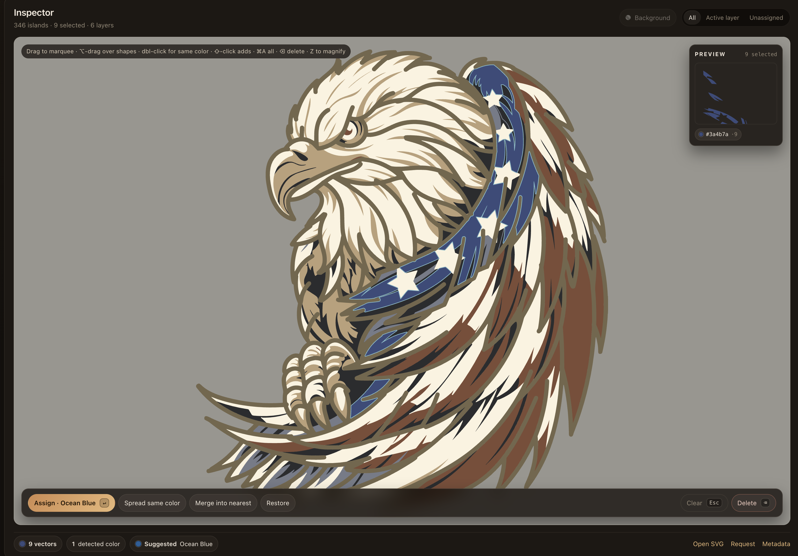
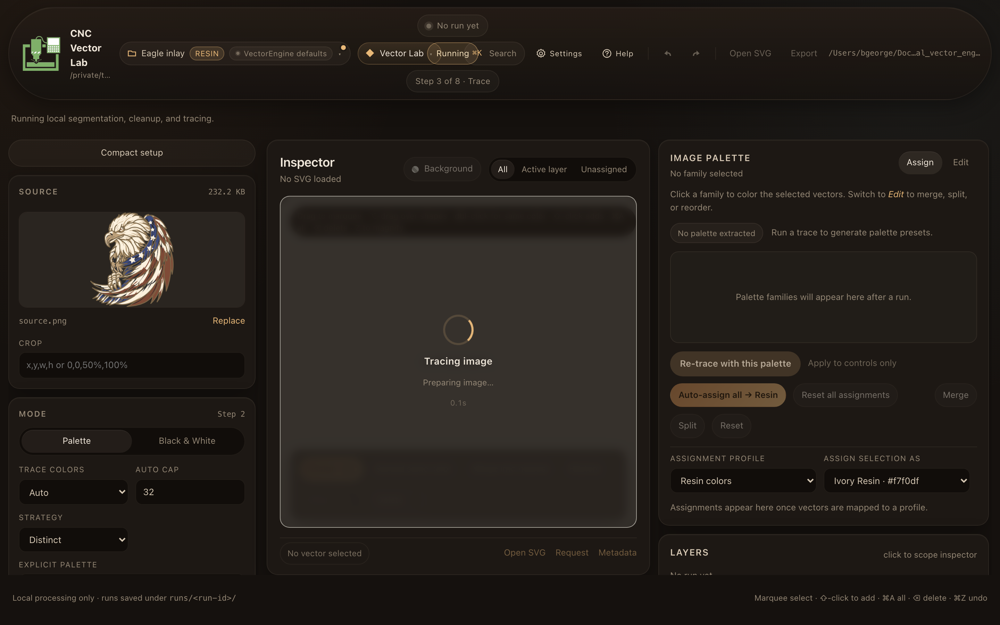
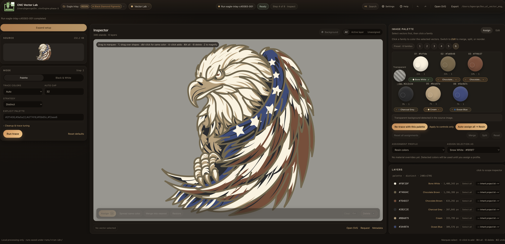
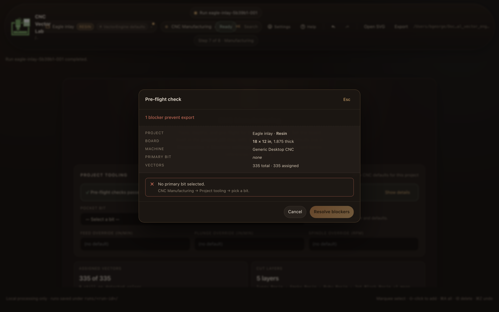
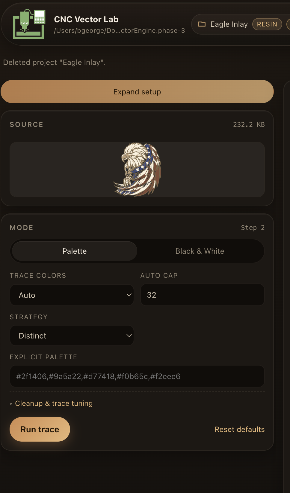
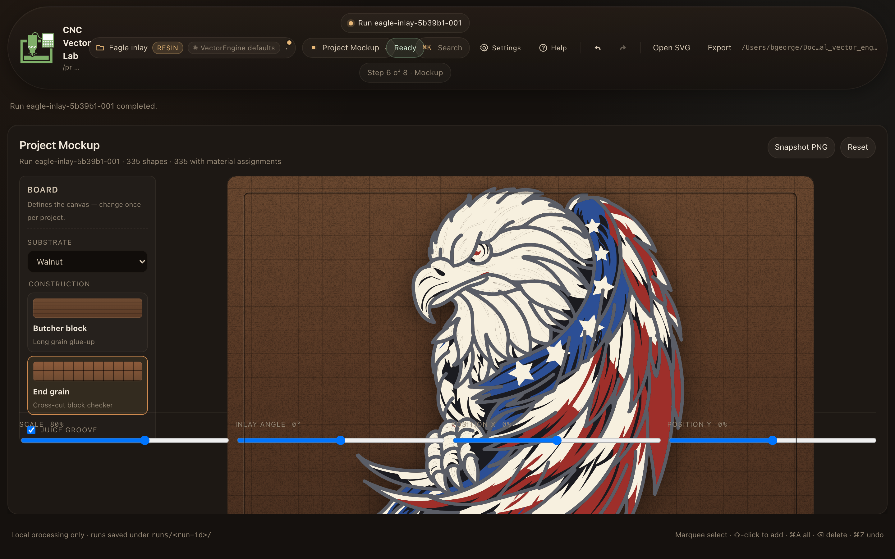
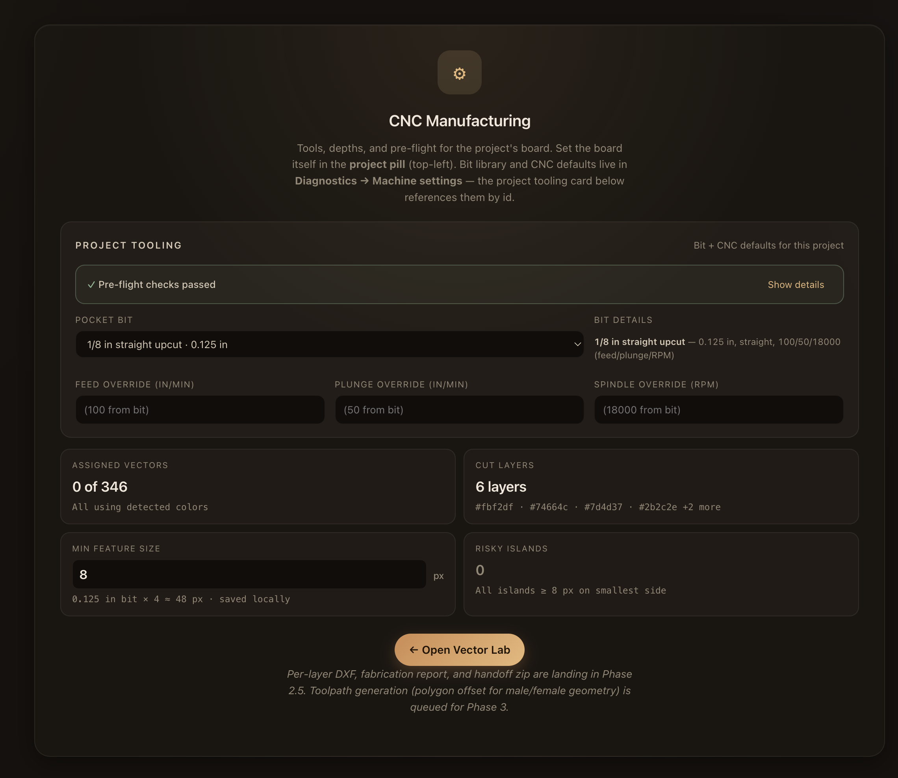
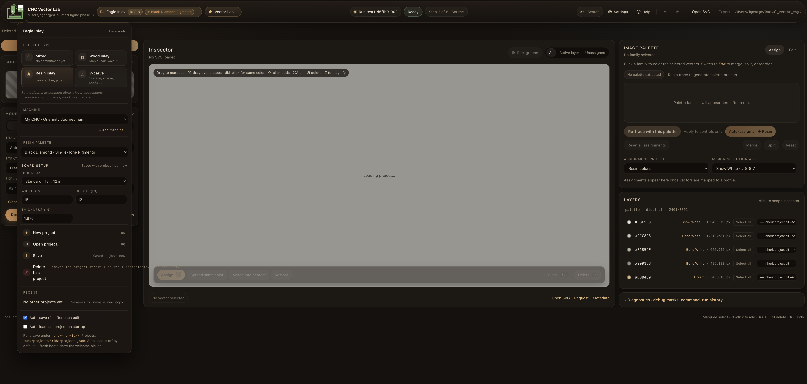
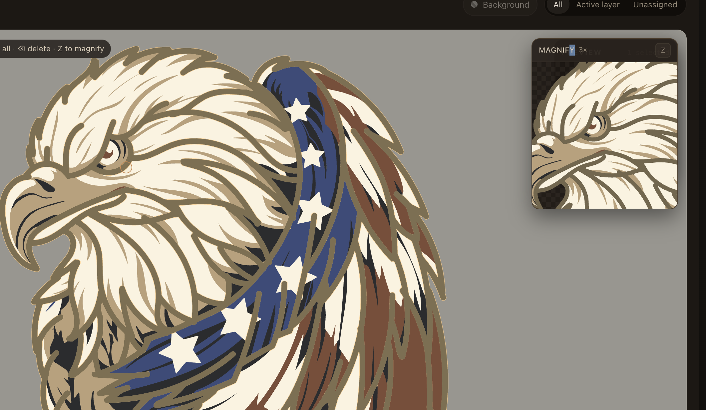
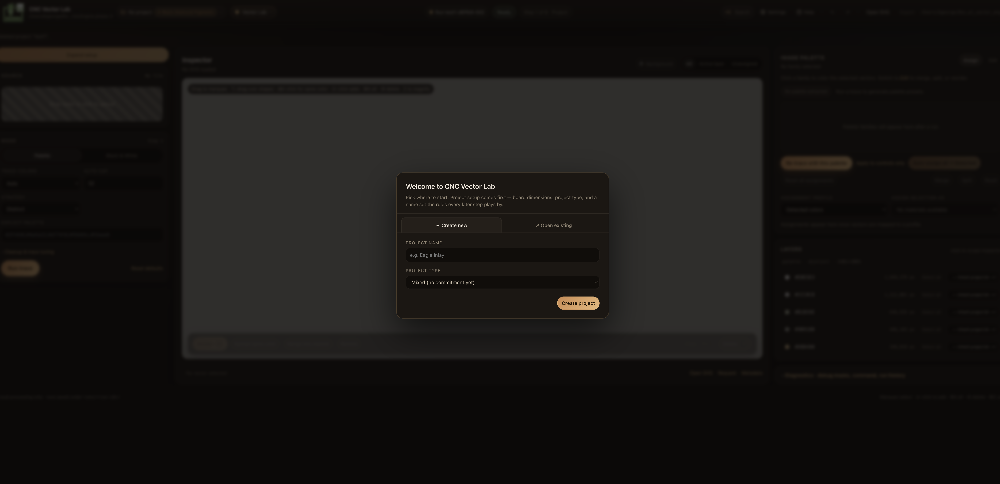

Art to inlay-ready DXF/SVG
in 10 minutes.
A local-first raster-to-CAM tool built for wood inlay, resin inlay, v-carve, and laser workflows. Per-layer DXF/SVG export with stable layer naming, manufacturing-grade handoff, 3D preview. Drop in to VCarve, Fusion, Aspire — no fighting Inkscape's Trace Bitmap.
- ✓ Runs locally — no upload
- ✓ No subscription
- ✓ 14-day full trial

The vectorizer that knows what inlay-ready means.
Stop fighting Inkscape
Trace Bitmap was built for clean line art, not complex art. CNC Vector Lab uses bilateral smoothing, palette segmentation, and per-layer cleanup so you don't spend an hour deleting noise islands by hand.
Stop hand-naming DXFs
One DXF/SVG per species, named the way VCarve expects them: {Project} - {Layer}.dxf. Re-trace and the names carry forward. Walnut layer stays walnut.
Stop guessing male inset
Wood-inlay projects ship both female (pocket) and male (insert) DXFs, offset by your fit clearance via polygon-offset math. Warnings when features are too small to survive the inset.
How it works
Four steps. Most projects ship in under 15 minutes.
-
1
Trace
Drop a PNG. Pick palette segmentation or B/W. Tune cleanup. The engine produces per-layer vector islands you can actually use.

-
2
Inspect & assign
Marquee-select stray islands, merge or delete them, assign each layer to a real material (Walnut, Maple, Cherry Red pigment, V-bit pass). Cut-risk warnings flag anything smaller than your bit.

-
3
Mockup & 3D preview
See the assembled inlay on a real substrate — walnut, maple, end-grain checker, juice groove. Rotate the 3D preview before cutting.

-
4
Export & handoff
One click ships a zip with per-layer DXF/SVGs, fab report, project config, and machine spec. Drop straight into VCarve / Fusion / Aspire. G-code stays with your CAM tool of choice.

Five workspaces, one project.
No mode-switching. Project state persists across the whole pipeline.






What ships in v0.1
🎯 Per-layer DXF/SVG export
LWPOLYLINE in board units. Layer names like {Project} - {Walnut}. $INSUNITS set per project. Round-trips cleanly through VCarve and Fusion 360.
🪵 Wood inlay: male + female
Both pocket and insert DXFs per layer, offset by your fit clearance via pyclipper polygon-offset. Warnings when features won't survive the inset.
🎨 Material libraries
Wood species, vendor resin palettes (Just Resin, Black Diamond), v-carve materials. ΔE76 color matching. Edit your own lumber rack.
🧊 3D Preview workspace
Rotate the assembled inlay before cutting. Solid / Color / Depth view modes. Vendored Three.js, no CDN, no tracking.
🛡️ Pre-flight sanity panel
Board larger than table? Bit spindle exceeds machine max? Layer assigned to a missing bit? Caught before the export, not at the machine.
📦 Manufacturing handoff zip
One bundle: per-layer DXFs, fabrication report (Markdown), reproduce script, project config, machine spec. Drop it in your shop folder and walk to the CNC.
💾 Local-first storage
Projects live in ~/Library/Application Support/CNC Vector Lab. No upload, no account, no cloud sync. Air-gap friendly.
🎛️ Project & machine pairing
Pair every project with a machine record (table size, spindle range, bit library, units). Sanity checks read both sides.
⌘K command palette
Every action discoverable from one fuzzy search. Inline help (?) with 24 topics. Keyboard-driven by design.
One-time price. No subscription. Ever.
Pricing TBD. Pair it with the perpetual VCarve license you already own. No Adobe tax.
14-Day Trial
Full features unlocked for 14 days.
- ✓ Full tracing engine
- ✓ Palette & B/W modes
- ✓ Inspector + cleanup
- ✓ Mockup workspace
- ✓ Assigned SVG export
- ✓ Custom material libraries
- — No per-layer DXF/SVG
- — No handoff zip
- — No 3D preview
CNC Vector Lab
Perpetual. 12 months of updates. Install on every machine you own.
- ✓ Everything in 14-Day Trial
- ✓ Per-layer DXF export
- ✓ Male + female (wood inlay)
- ✓ Manufacturing handoff zip
- ✓ 3D Preview workspace
- ✓ Fab report (Markdown)
- ✓ Pre-flight sanity checks
- ✓ 14-day full trial
- ✓ Email support
Lifetime updates
All future versions, no renewal. For long-term backers.
- ✓ Everything in CNC Vector Lab
- ✓ All future updates, forever
- ✓ Priority email support
- ✓ Early-access builds
After year 1, paid updates are TBD/year (optional — skipping keeps the version you have working forever). Refunds within 30 days, no questions.
Built on real test cuts.
Every release is validated against real artwork — the Eagle inlay shown here was the canonical test case across Phases 1 through 4. We don't ship features that haven't survived a scrap-board test.
FAQ
Does this replace VCarve / Fusion / Aspire?
No — it feeds them. CNC Vector Lab stops at DXF/SVG. Your CAM tool of choice generates G-code from those files. G-code is machine- and post-processor-specific; we keep that with your tool, which already does it well.
Will it run offline?
Yes. The app is desktop-only. Once installed, no network connection is required for tracing, inspection, mockup, 3D preview, or export. License verification is one-time + offline-signed.
What about my artwork — is it uploaded anywhere?
Never. Source images, projects, and exports all stay on your machine. There is no cloud sync, no telemetry, no account required.
Which CNCs is it tested against?
Bundled machine presets ship for Shapeoko 3 / 4 XL, X-Carve Pro, Onefinity Journeyman, LongMill MK2, and a generic profile. The output is plain DXF, so any machine with a CAM tool that imports DXF works.
Can I use it for laser cutting / engraving?
Yes. Per-layer SVG and DXF export feed LightBurn, xTool Creative Space, and similar laser CAM tools. Pigment/resin material libraries make multi-pass laser inlay straightforward.
What if I need a refund?
30 days, no questions. Email and we'll process it.
Mac and Windows?
Both. Unsigned builds for v0.1 (one-paragraph "first launch on Mac" doc included). Signed builds in v0.2+.
How does the 14-day trial work?
Email us for a trial code. Paste it in Settings → License. Full paid features unlock for 14 days. After expiry the free tier keeps working — the paid features quietly grey out. No hard-stop, no upgrade nag.
Download
v0.1 builds for macOS and Windows. 14-day trial available — fill out the contact form to get your download link.
Fill out the contact form and select "Trial code request" — we'll send you the download link and your trial key. First launch on Mac: right-click the app → Open.
Get in touch.
Questions about a specific project type? Need a trial code? Found a bug? Want to feature CNC Vector Lab in your YouTube workflow video?
Email: contact@cncvectorlab.com
Support: support@cncvectorlab.com
Press & partnerships: contact@cncvectorlab.com
We reply within one business day. Solo-developer-run; please be patient on weekends.